專案類型
5 人團體專案(大學畢業專題)
FuturesWarbler 是一套以期貨投資新手為主要使用者的策略分析與模擬交易平台。
團隊從自身的投資新手經驗出發，發現新手除了需要理解期貨商品、交易策略與風險管理，也可能因不熟悉交易流程及擔心資金損失，而對實際投入有所顧慮。因此，我們開發 FuturesWarbler，整合了策略設定、歷史回測、機器學習分析與模擬下單，讓使用者能在投入真實資金前能驗證交易策略、檢視績效並練習交易；同時提供期貨知識、財經新聞與交易紀錄，讓使用者透過模擬操作逐步理解期貨交易，實踐 Learning by Doing 的概念。
平台名稱取自能察覺風暴並提前避開風險的金翅鶯(Golden-winged Warbler)。Futures Warbler 的核心概念，是將平台化身為一隻能「察覺市場風向」的 Warbler，讓使用者在市場出現機會時能順勢掌握風向、迎風而起，也能在風險來臨前提高警覺、避開潛在損失。
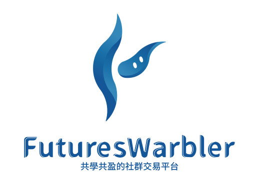
5 人團體專案(大學畢業專題)
2021~2022
專案組長、介面設計與網頁切版、回測功能及SVM演算法之程式撰寫、 Logo 與活動 DM&海報設計
Figma、HTML、CSS、JQuery、Python、MySQL、GitHub
期貨模擬交易 Web 系統、系統規格書
本專案流程以瀑布式開發概念為基礎，先完成需求與功能規劃，再依序進行系統設計與功能開發。
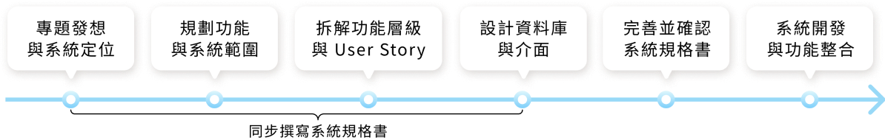
依據新手在期貨交易中可能面臨的問題，本團隊整理出四項核心目標，並據此建立平台的規劃方向，作為後續功能設計與系統開發的基礎。
期貨商品種類繁多，新手較難挑選適合的商品，也不易掌握各商品過往的價格變化與市場走勢。
聚焦 11 種具代表性的國內外期貨商品，整合商品資訊與歷史走勢，協助使用者進行比較與判斷。
期貨市場持續變動，且相關資訊分散於不同來源，使用者需花費時間自行搜尋與整理。
集中呈現商品行情、價格走勢與財經新聞，減少使用者於不同資訊來源間切換與搜尋。
新手對分析資訊、圖表與交易介面較不熟悉，較難理解市場走勢與完整交易流程。
提供期貨基礎知識與技術指標說明，搭配商品走勢分析與模擬下單，協助使用者逐步熟悉分析、看盤與交易流程。
不同使用者可投入的資金與可接受風險程度不同，因此在交易條件上也有不同需求。
提供資金管理、進出場及停損停利設定，讓使用者能依自身條件調整交易策略。
依據前述專案目標，本團隊進一步界定平台需涵蓋的功能範圍，並規劃出了「智能機器人顧問」、「模擬交易所」、「期貨小教室」、「新聞」與「個人頁面」五大功能模組，分別對應策略分析、模擬操作、知識理解、市場資訊與個人交易管理等需求。
提供交易策略與智能交易策略兩種分析方式，讓使用者設定交易條件、執行歷史分析並保存策略組合。
整合商品資訊、看盤與模擬下單，提供使用者進行期貨市場觀察與模擬交易的主要操作環境。
提供期貨基本知識與技術指標介紹，作為使用者操作平台及理解分析資訊時的知識補充。
整合最新與熱門財經新聞，並依財經、期貨、兩岸與國際等類別提供瀏覽與搜尋。
管理使用者帳戶、模擬資金、已保存策略與交易紀錄，並支援帳號登入與註冊。
FuturesWarbler 五大模組及核心功能
在這一環節中，本團隊依據五大功能模組進行 User Story Mapping，將需求由 User Activity、User Task 逐步拆解至 User Story，並依功能重要性安排優先順序。
同時，針對各層級需求，進一步定義使用者角色、需求與價值，並以 Given–When–Then 描述驗收情境，作為後續介面設計與系統開發的依據。
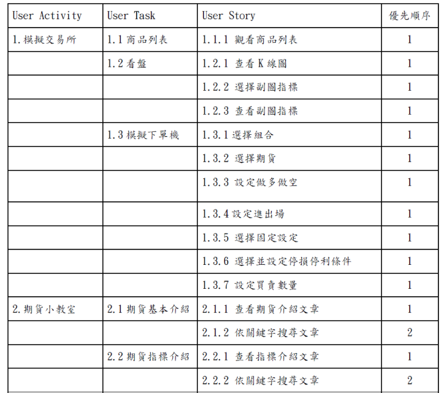
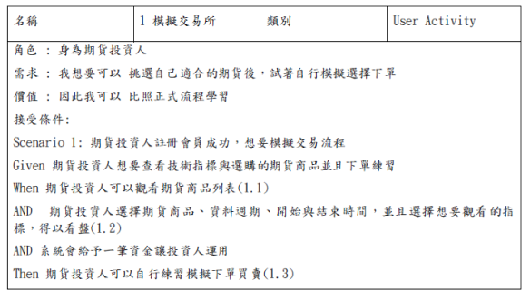
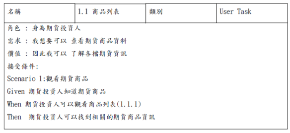
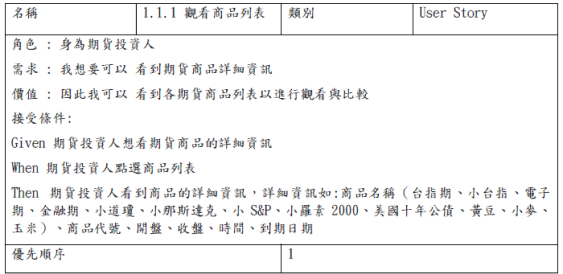
各模組之功能清單與各層級之需求定義卡(以部分功能為例)
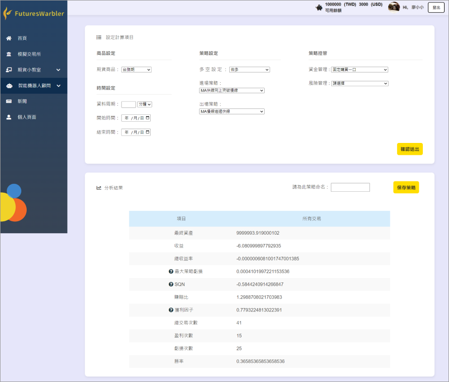
完成使用者需求定義後，本團隊進一步串接各功能的使用流程，並結合資料庫設計確認所需資料，再轉化為實際介面。
在此階段，我主要負責功能流程規劃，以及將需求轉換為可操作的頁面與資訊呈現。
設定交易量特徵
瀏覽交易策略分析結果
為策略命名、保存策略
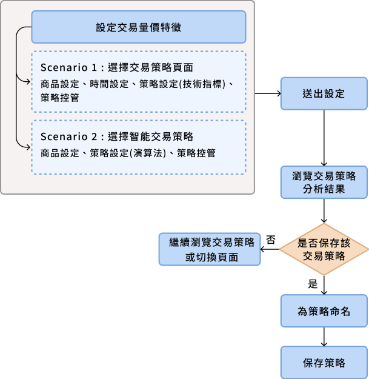
核心流程 1 : 智慧機器人顧問
智能機器人顧問-交易策略介面
1
2
3
1
2
3
核心流程 2 : 模擬交易所
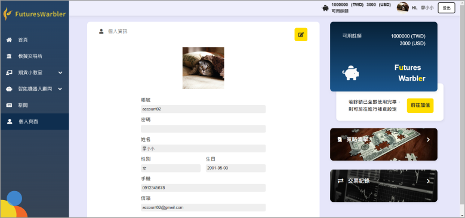
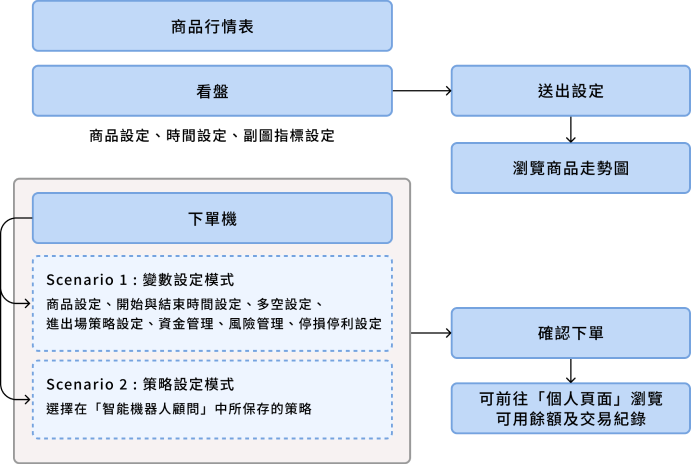
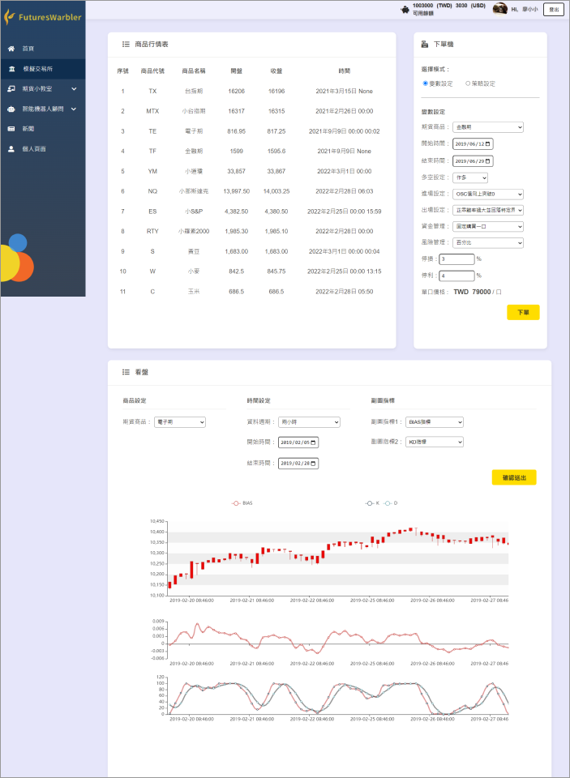
商品行情表
看盤
下單機
模擬交易所介面
個人頁面介面
1
2
3
4
5
1
3
2
4
個人餘額與加值
透過 Trello 管理任務分工與進度，並於每週討論中確認各功能的執行情況與待處理事項；開發階段則使用 GitHub 集中管理程式碼與版本，以協助團隊共同開發與進行功能整合。
專案進入開發階段後，部分任務進度與原訂時程出現落差，可能進一步影響後續功能整合與專案完成度。
作為組長，我重新盤點各模組的完成狀況與剩餘工作，並依時程調整任務安排與功能範圍；優先完成主要使用流程所需功能，再依剩餘時間安排次要項目，讓團隊能集中資源完成核心內容。